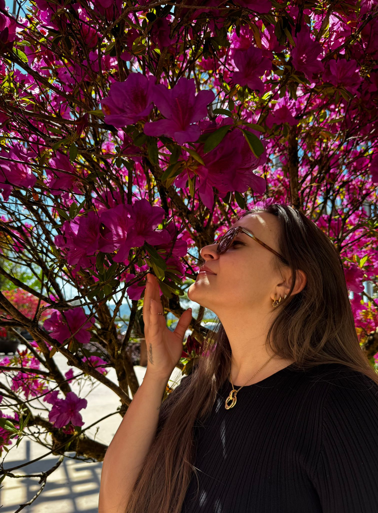

About Me
Chi sono...o forse: chi sto diventando.
Mi chiamo Sara, e da sempre scrivo per sopravvivere alle emozioni che non riesco a trattenere. Hakanai Petals e' nato nei giorni in cui il dolore e la bellezza coesistevano senza chiedere il permesso.
Non scrivo per spiegare. Scrivo per restare. Per dare voce a quello che si muove sotto la pelle: le notti insonni, la nostalgia, i ricordi che tornano da soli.
Qui troverai poesie personali, concetti giapponesi che danno un nome al non detto, e sguardi delicati sulla fragilita'.
Questo spazio e' il mio modo di esserci. E, forse, anche il tuo.
Sara Fanelli 🌸